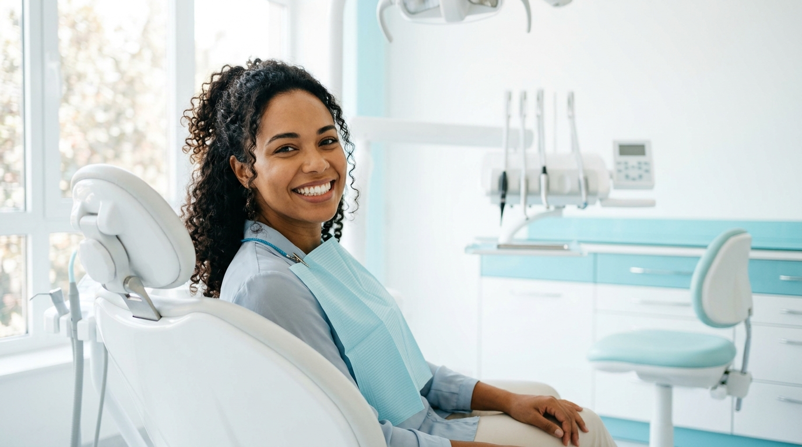
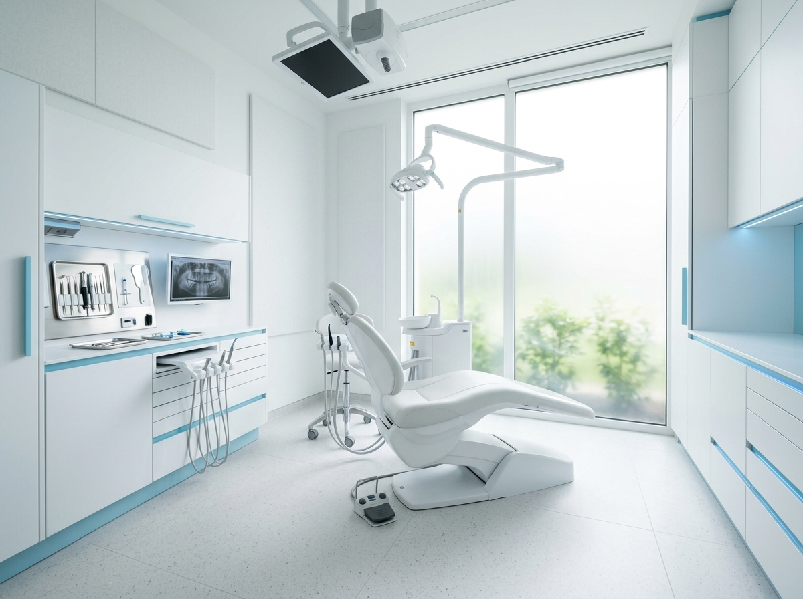
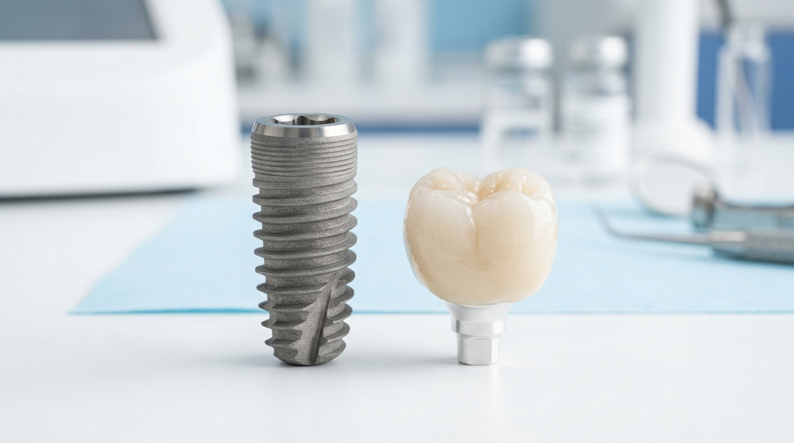
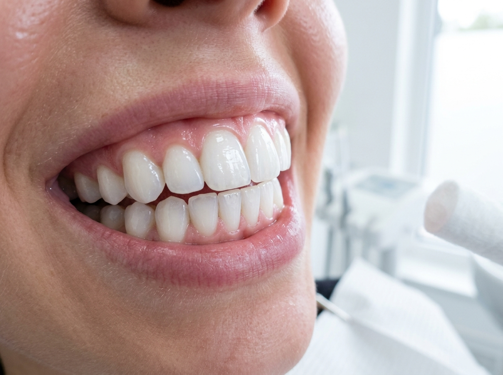
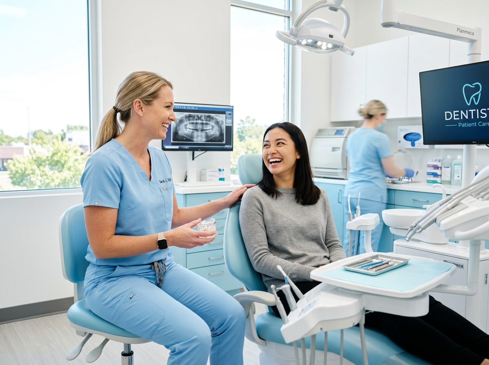

Cuidado odontológico completo para você e sua família, no coração de Ibirité.
Com mais de 30 anos de experiência em odontologia, a Odonto Super oferece implantes, ortodontia, próteses e estética dental com tecnologia avançada, transparência e acolhimento humano na Rua Freitas de Oliveira.

Instalações modernas da Odonto Super na Rua Freitas de Oliveira, 59 — Lojas 01 e 02.
Mais de três décadas dedicadas à saúde e à confiança do seu sorriso.
A Odonto Super Ibirité consolida uma trajetória de mais de 30 anos de experiência em odontologia, unindo tradição, equipamentos modernos e uma abordagem acolhedora para cuidar de cada paciente com o respeito e o tempo que ele merece.
Nosso compromisso é proporcionar odontologia acessível e de alta qualidade. Oferecemos suporte completo para crianças, adolescentes, adultos e idosos, permitindo que toda a sua família realize tratamentos preventivos, estéticos e reabilitadores em um único lugar com total tranquilidade.
Implantes Dentários: Segurança e estabilidade para mastigar e sorrir.
Recupere a mastigação firme, a fonética e a estética natural com implantes de alta precisão. Uma solução definitiva e biocompatível que preserva a estrutura óssea e devolve a liberdade para sorrir sem preocupações.

Especialidades completas para o cuidado e a harmonia bucal.
Procedimentos realizados com rigor técnico, conforto anestésico e materiais de máxima biocompatibilidade para todas as idades.

Implantes Dentários
Substituição segura de raízes ausentes por pinos de titânio biocompatíveis com coroas de cerâmica altamente resistentes.
Prótese Dentária
Reabilitação protética fixa, removível ou sobre implantes, restabelecendo a oclusão correta e o conforto ao mastigar.
Ortodontia
Aparelhos fixos convencionais, estéticos e alinhadores transparentes para o correto alinhamento dos dentes e mordida.

Lentes de Contato Dental
Lâminas ultrafinas de porcelana para corrigir forma, cor, proporção e fechamento de diastemas com mínima invasão.
Clareamento Dental
Protocolos supervisionados em consultório e caseiros para remover pigmentações e resgatar o brilho natural com proteção ao esmalte.

Limpeza e Profilaxia
Remoção de cálculo dental (tártaro), biofilme bacteriano e polimento coronário, prevenindo cáries e gengivites.
Tratamento de Canal
Procedimentos endodônticos precisos com tecnologia rotatória e anestesia eficiente para alívio de dores e preservação dental.
Restaurações Estéticas
Recuperação de dentes fraturados ou afetados por cáries utilizando resinas compostas com tonalidades idênticas ao dente.
Extrações & Cirurgia Oral
Cirurgias de dentes inclusos (siso) e procedimentos menores com acompanhamento pós-operatório atencioso e tranquilo.
Facetas de Resina
Transformação estética do formato e alinhamento dos dentes anteriores realizada em poucas sessões com resinas de alta tecnologia.
Atendimento Familiar Completo
Protocolos preventivos pensados especificamente para crianças, adolescentes, adultos e idosos com carinho e paciência.
Passo a passo simples, transparente e sem complicações.
Desde o primeiro contato até o acompanhamento final, você sabe exatamente o que esperar de cada consulta.
Avaliação & Escuta Atenta
Ouvimos sua queixa com calma, examinamos detalhadamente sua saúde bucal e tiramos todas as dúvidas iniciais.
Planejamento Claro & Sem Surpresas
Apresentamos as alternativas de tratamento, cronograma estimado e valores com total transparência antes de iniciar.
Atendimento Cuidadoso & Humanizado
Consultas sem correria, técnicas modernas e anestesia eficaz, respeitando sempre o seu ritmo e bem-estar na cadeira.
Acompanhamento Contínuo
Orientações práticas de higiene bucal preventiva e suporte próximo para manter seu sorriso saudável por muitos anos.
Por que confiar seu sorriso à Odonto Super Ibirité.
Mais de 30 anos de tradição
Mais de três décadas de experiência contínua em odontologia, transmitindo solidez, segurança e milhares de tratamentos bem-sucedidos.
Atendimento para toda a família
Cuidado abrangente e acolhedor para crianças, jovens, adultos e idosos. Uma clínica completa para a saúde bucal da família inteira.
Localização central e acessível
Situada na Rua Freitas de Oliveira, 59 (Lojas 01 e 02), no coração do Centro de Ibirité, com fácil estacionamento e acesso rápido.
O que dizem sobre a Odonto Super em Ibirité.
Avaliações reais de quem confiou a saúde bucal e o sorriso à nossa equipe no Centro de Ibirité.
"Excelente clínica! Fiz meu implante dentário e o procedimento foi muito rápido e sem dor. A recuperação foi super tranquila e o resultado ficou extremamente natural. Estou muito satisfeito!"
"Fiquei encantada com o atendimento da Odonto Super! Toda a equipe é super atenciosa, profissional e cuidadosa. Explicam cada detalhe com calma. Meu sorriso nunca esteve tão bonito e saudável!"
"Passei a levar mais a sério a minha saúde bucal depois que comecei a ser atendida aqui. O serviço é impecável, o ambiente é super higienizado e todos são muito solícitos. Recomendo em Ibirité!"
"Ótima estrutura no Centro de Ibirité, atendimento pontual e equipe altamente qualificada. Fiz meu tratamento com muita tranquilidade, sem dor e com total transparência nos valores."
"Ambiente moderno, acolhedor e dentistas que realmente se importam com você. Fiz clareamento dental e manutenção do aparelho, o resultado superou todas as minhas expectativas!"
"Levo minha família toda. A atenção e a paciência com que atendem desde os pequenos até os idosos é exemplar. Mais de 30 anos de experiência que se refletem na qualidade."
No centro de Ibirité.
Endereço Oficial
Rua Freitas de Oliveira, 59 — Lojas 01 e 02
Centro — Ibirité / MG • CEP 32400-185
Telefone & WhatsApp
(31) 99706-9312
Horários de Atendimento
| Segunda a Sexta-feira | 08:00 às 18:00 |
| Sábado | 08:00 às 12:00 |
| Domingo | Fechado |